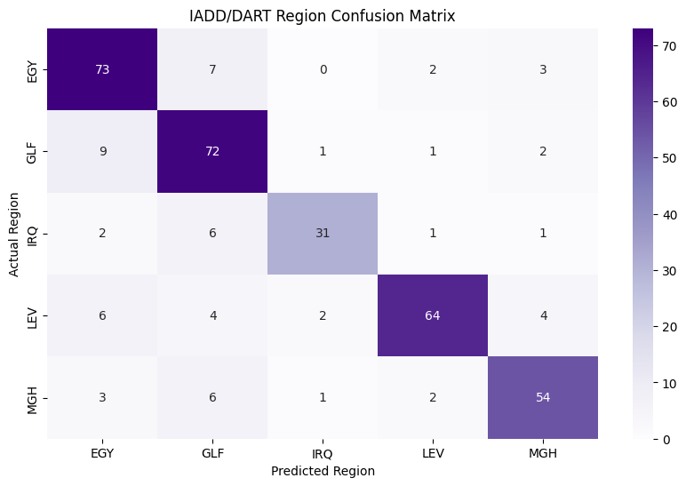

import pandas as pd
import numpy as np
import re
import seaborn as sns
import matplotlib.pyplot as plt
from sklearn.model_selection import train_test_split
from sklearn.feature_extraction.text import TfidfVectorizer
from sklearn.linear_model import LogisticRegression
from sklearn.metrics import classification_report, confusion_matrix, accuracy_score
# --- 1. LOAD DATA ---
# Download 'iadd_dataset.csv' or 'iadd_dataset.json' from the GitHub repository:
# https://github.com/JihadZa/IADD
# OR use it from the repo directly
try:
# Reading IADD structure: keys are typically 'Sentence', 'Region', and 'DataSource'
df = pd.read_json("datasets/IADD.json")
# Filter for DART subset only (optional)
df = df[df['DataSource'] == 'DART']
# Identify standard IADD Region labels: EGY, LEV, GLF, IRQ, MGH
target_col = 'Region'
text_col = 'Sentence'
except FileNotFoundError:
print("Error: iadd_dataset.csv not found. Reverting to schema-compliant mock data.")
regions = ["EGY", "LEV", "GLF", "IRQ", "MGH"]
mock_data = []
for r in regions:
for i in range(200):
mock_data.append({"Region": r, "Sentence": f"نص تجريبي من منطقة {r}", "DataSource": "DART"})
df = pd.DataFrame(mock_data)
target_col = 'Region'
text_col = 'Sentence'
# double check if it works
print("Columns:", df.columns)
print("First 5 rows:")
print(df.head())
print("Value counts for 'Region':")
print(df['Region'].value_counts() if 'Region' in df.columns else "'Region' column not found")
print("DataFrame shape:", df.shape)Columns: Index(['Sentence', 'Region', 'DataSource', 'Country'], dtype='str')
First 5 rows:
Sentence Region DataSource Country
0 : وش فيك تسألني إذا كنت غالي؟ غالي وتسوى من ... GLF DART NA
1 روان بن حسين مستحيل ما ادز شي بسناب حتى لو ما... GLF DART NA
2 : ما نسيتك بالدعا والأرض جفاف، وشلون أبنساك و... GLF DART NA
3 : فارس_البقميk_محب أطيب من الطيب واصل الطيب ... GLF DART NA
4 شوفو والله ابوها كشخه وصغير احس واضحه الفلوس م... GLF DART NA
Value counts for 'Region':
Region
GLF 423
EGY 423
LEV 397
MGH 331
IRQ 207
Name: count, dtype: int64
DataFrame shape: (1781, 4)
# --- 2. ARABIC NORMALIZATION ---
def normalize_arabic(text):
text = str(text)
text = re.sub(r"[\u064B-\u0652]", "", text) # Remove diacritics
text = re.sub(r"[أإآ]", "ا", text) # Normalize Alif
text = re.sub(r"ى", "ي", text) # Normalize Yeh
text = re.sub(r"ة", "ه", text) # Normalize Teh Marbuta
text = re.sub(r"[^\u0621-\u064A\s]", " ", text)
text = re.sub(r"\s+", " ", text).strip()
return text
# --- 3. PIPELINE ---
df['text_clean'] = df[text_col].apply(normalize_arabic)
# DART is balanced over 5 regions (~5k per region in the full ~25k set)
# old version didnt work: df_sampled = df.groupby(target_col).apply(lambda x: x.sample(n=min(len(x), 5000), random_state=42)).reset_index(drop=True)
df_sampled = df.sample(frac=1, random_state=42).groupby(target_col, group_keys=False).head(5000).reset_index(drop=True)
X_train, X_test, y_train, y_test = train_test_split(
df_sampled['text_clean'],
df_sampled[target_col],
test_size=0.2,
stratify=df_sampled[target_col],
random_state=42
)
vectorizer = TfidfVectorizer(analyzer='char', ngram_range=(3, 5), max_features=25000)
X_train_tfidf = vectorizer.fit_transform(X_train)
X_test_tfidf = vectorizer.transform(X_test)
model = LogisticRegression(max_iter=1000,class_weight='balanced')
model.fit(X_train_tfidf, y_train)
# --- 4. EVALUATION ---
y_pred = model.predict(X_test_tfidf)
labels = sorted(df_sampled[target_col].unique())
print(f"Overall Accuracy: {accuracy_score(y_test, y_pred):.4f}")
print("\nRegion-Level Report:\n", classification_report(y_test, y_pred))
plt.figure(figsize=(10, 6))
cm = confusion_matrix(y_test, y_pred, labels=labels)
sns.heatmap(cm, annot=True, fmt='d', xticklabels=labels, yticklabels=labels, cmap='Purples')
plt.title('IADD/DART Region Confusion Matrix')
plt.ylabel('Actual Region')
plt.xlabel('Predicted Region')
plt.show()
#ensure it isnt working
print(df_sampled.columns)Overall Accuracy: 0.8235
Region-Level Report:
precision recall f1-score support
EGY 0.78 0.86 0.82 85
GLF 0.76 0.85 0.80 85
IRQ 0.89 0.76 0.82 41
LEV 0.91 0.80 0.85 80
MGH 0.84 0.82 0.83 66
accuracy 0.82 357
macro avg 0.84 0.82 0.82 357
weighted avg 0.83 0.82 0.82 357

Index(['Sentence', 'Region', 'DataSource', 'Country', 'text_clean'], dtype='str')